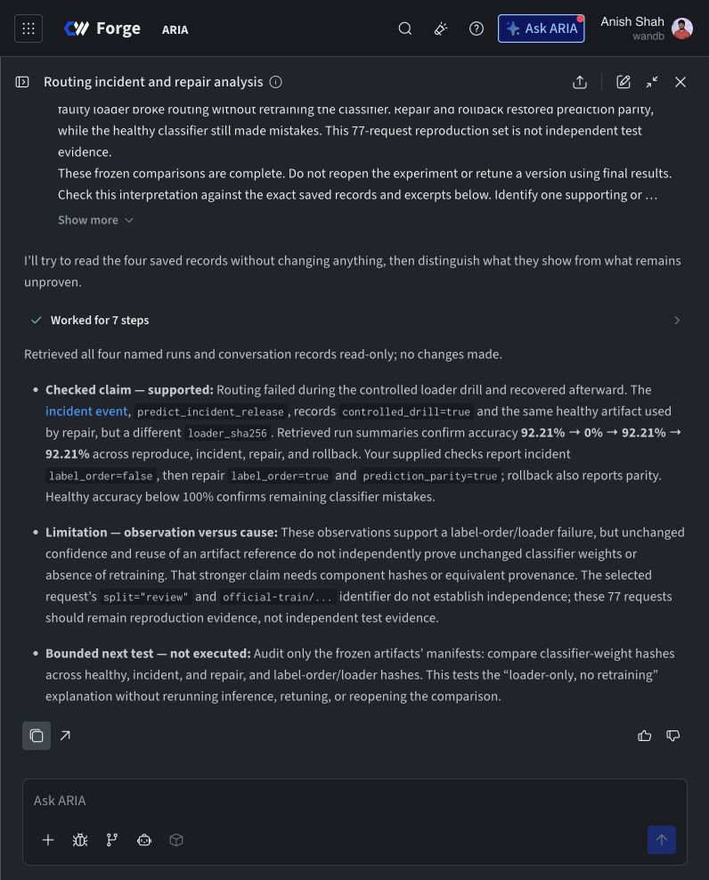
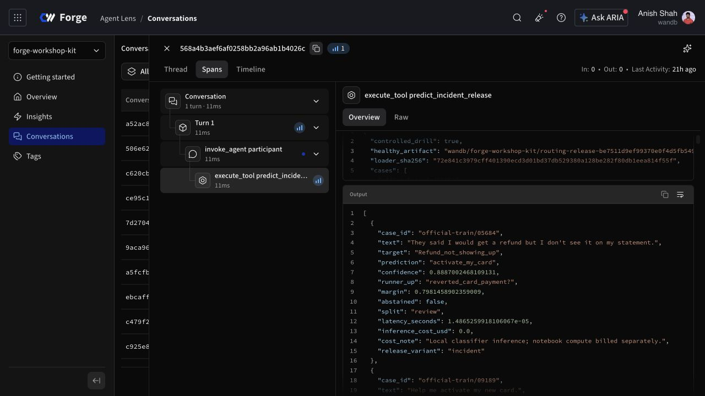

Request Routing / Check our conclusion
Recorded instructor investigation. These are saved instructor records, not the outcome of an unexecuted participant edit.
Exact run and conversation URLs plus saved release-drill excerpts; no native attachment. ARIA retrieved the four named runs and conversations read-only, confirmed aggregate accuracy and inspected the incident loader event. Label-order and parity-check findings were supplied excerpts. ARIA correctly left the stronger unchanged-weights claim pending a component-hash comparison.
Open the actual ARIA conversation · Check the supplied source values offline
Exact submitted prompt
I am preparing an instructor-recorded routing workshop investigation. My interpretation: The controlled faulty loader broke routing without retraining the classifier. Repair and rollback restored prediction parity, while the healthy classifier still made mistakes. This 77-request reproduction set is not independent test evidence.
These frozen comparisons are complete. Do not reopen the experiment or retune a version using final results.
Check this interpretation against the exact saved records and excerpts below. Identify one supporting or contradicting observation and cite the record, field, or event. Separate observations from possible causes; state missing evidence. Do not change code or settings, launch experiments, update project memory, or create automations. Analysis only.
Records: [{"stage_id":"79e43a453f7055b8db367f1229860185","stage_name":"routing/release/reproduce","trace_url":"https://forge.coreweave.com/agent-lens/wandb/forge-workshop-kit/conversations/79e43a453f7055b8db367f1229860185","run_url":"https://forge.coreweave.com/wandb/wandb/forge-workshop-kit/runs/79e43a453f7055b8db367f1229860185"},{"stage_id":"568a4b3aef6af0258bb2a96ab1b4026c","stage_name":"routing/release/incident","trace_url":"https://forge.coreweave.com/agent-lens/wandb/forge-workshop-kit/conversations/568a4b3aef6af0258bb2a96ab1b4026c","run_url":"https://forge.coreweave.com/wandb/wandb/forge-workshop-kit/runs/568a4b3aef6af0258bb2a96ab1b4026c"},{"stage_id":"fb0660a600e69c61e5322f482bb4fbd1","stage_name":"routing/release/repair","trace_url":"https://forge.coreweave.com/agent-lens/wandb/forge-workshop-kit/conversations/fb0660a600e69c61e5322f482bb4fbd1","run_url":"https://forge.coreweave.com/wandb/wandb/forge-workshop-kit/runs/fb0660a600e69c61e5322f482bb4fbd1"},{"stage_id":"07ba6464ced23ab18ab2c096302eb4df","stage_name":"routing/release/rollback","trace_url":"https://forge.coreweave.com/agent-lens/wandb/forge-workshop-kit/conversations/07ba6464ced23ab18ab2c096302eb4df","run_url":"https://forge.coreweave.com/wandb/wandb/forge-workshop-kit/runs/07ba6464ced23ab18ab2c096302eb4df"}]
Saved evidence excerpts: {"reproduce":{"metrics":{"macro_f1":0.8961038961038961,"accuracy":0.922077922077922,"coverage":0.8571428571428571,"selective_accuracy":0.9393939393939394,"count":77,"latency_seconds":0.000844459020299837},"checks":null,"selected_request":{"case_id":"official-train/05684","text":"They said I would get a refund but I don't see it on my statement.","target":"Refund_not_showing_up","prediction":"Refund_not_showing_up","confidence":0.8887002468109131,"runner_up":"request_refund","margin":0.7981458902359009,"abstained":false,"split":"review","latency_seconds":1.0967000263634246e-05,"inference_cost_usd":0.0,"cost_note":"Local classifier inference; notebook compute billed separately.","release_variant":"healthy"}},"incident":{"metrics":{"macro_f1":0.0,"accuracy":0.0,"coverage":0.8571428571428571,"selective_accuracy":0.0,"count":77,"latency_seconds":0.0011446250136941671},"checks":{"label_set":true,"label_order":false,"prediction_parity":false},"selected_request":{"case_id":"official-train/05684","text":"They said I would get a refund but I don't see it on my statement.","target":"Refund_not_showing_up","prediction":"activate_my_card","confidence":0.8887002468109131,"runner_up":"reverted_card_payment?","margin":0.7981458902359009,"abstained":false,"split":"review","latency_seconds":1.4865259918106067e-05,"inference_cost_usd":0.0,"cost_note":"Local classifier inference; notebook compute billed separately.","release_variant":"incident"}},"repair":{"metrics":{"macro_f1":0.8961038961038961,"accuracy":0.922077922077922,"coverage":0.8571428571428571,"selective_accuracy":0.9393939393939394,"count":77,"latency_seconds":0.0003137910098303109},"checks":{"label_set":true,"label_order":true,"prediction_parity":true},"selected_request":{"case_id":"official-train/05684","text":"They said I would get a refund but I don't see it on my statement.","target":"Refund_not_showing_up","prediction":"Refund_not_showing_up","confidence":0.8887002468109131,"runner_up":"request_refund","margin":0.7981458902359009,"abstained":false,"split":"review","latency_seconds":4.075207919874168e-06,"inference_cost_usd":0.0,"cost_note":"Local classifier inference; notebook compute billed separately.","release_variant":"repair"}},"rollback":{"metrics":{"macro_f1":0.8961038961038961,"accuracy":0.922077922077922,"coverage":0.8571428571428571,"selective_accuracy":0.9393939393939394,"count":77,"latency_seconds":0.0005195000267121941},"checks":{"prediction_parity":true},"selected_request":{"case_id":"official-train/05684","text":"They said I would get a refund but I don't see it on my statement.","target":"Refund_not_showing_up","prediction":"Refund_not_showing_up","confidence":0.8887002468109131,"runner_up":"request_refund","margin":0.7981458902359009,"abstained":false,"split":"review","latency_seconds":6.746753593664858e-06,"inference_cost_usd":0.0,"cost_note":"Local classifier inference; notebook compute billed separately.","release_variant":"healthy"}}}
Give a concise response with one checked claim, one limitation, and one bounded next test. If you cannot read a linked record, say so and base any interpretation explicitly on the supplied excerpt.
Please retrieve the named records read-only if the available tools support it. If they do not, state that limitation. Keep the response under 220 words.Actual ARIA response
Instructor citation check
supported: The controlled release defect reduced accuracy from 92.21% to zero, and the repair and rollback restored the healthy predictions.
The same 77 review-pool requests have accuracy 0.922077922077922 for healthy, repaired, and rollback releases, and 0 for the incident. Saved repair and rollback checks report prediction_parity=true; the incident has label_order=false. These reproduction results match ARIA’s retrieved run summaries. They are not independent test results, and do not remove the classifier’s remaining errors.
Open the checked record in Forge


- Target, destination, confidence